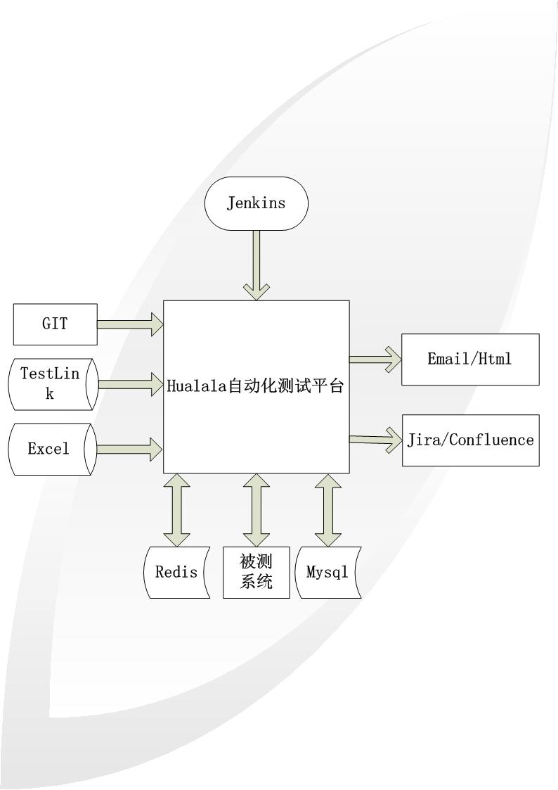
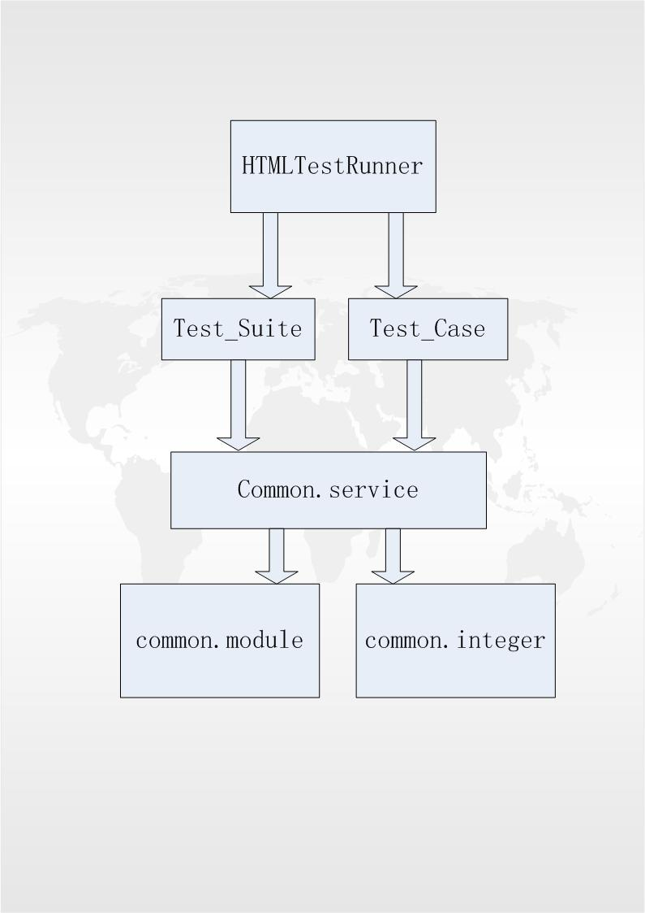

业务下沉，重复工作，机器完成 人工聚焦探索、感知、体验性测试
1.语法简洁，易于学习，便于推广 2.释放精力，聚焦设计 2.生态完善 3.前景明朗
整体拓扑图：

package依赖关系图：

包名 含义 common 按照分层原则进行的工具类封装 1.service: case执行facade 2.module: 基础封装类 2.integretion: 系统集成封装类 test_case 单独的测试用例 test_suite 按照不同维度进行组装的case集 data 测试数据来源 report 脚本执行结果的图文报表 log 脚本执行过程中的埋点数据
脚本更新：
第一步：编辑case数据 第二步：test_case内case逻辑填充 第三步：将新增case集成到test_suite内 优化步骤：case中重复的部分，抽象到common.biz内执行过程：
第一步：通过Jenkins 一键触发 第二步：通过超链接或邮件查看测试报告